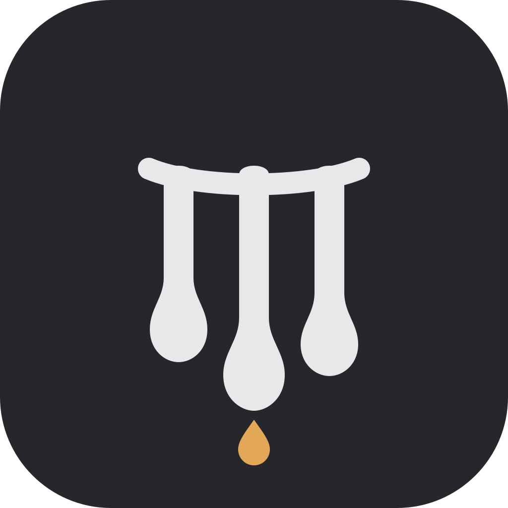

Колокол как отправная точка, но без прямых линий: мягкие дуги, каплевидные низы, восковая пластика. Палитра та же: графит, тёплый белый, янтарь. Скажите, какой вариант ближе — или что в нём поправить.
SVG 1024 × 1024 #26262B / #E8E8EA / #E3A857
01 · один объект
Тающий колокол
Колокол с волнистым, оплывающим подолом и янтарной каплей-языком. Мягкое кольцо сверху.
56
32
16
на светлом

02 · три трубы
Капли
Три трубы-подвески с восковыми каплями на концах и мягкой провисающей перекладиной. Янтарная капля внизу.
56
32
16
на светлом
03 · другая метафора
Плавная нота
Нота с округлой головкой, изогнутым стеблем и флагом, который стекает вниз. Янтарная капля на конце.
56
32
16
на светлом
Мой выбор — «Тающий колокол»: он остаётся колоколом в 16 px и не превращается в эквалайзер.